theorynoun
UK
/ˈθɪə.ri/US/ˈθɪr.i/理論。開頭是 θ——舌頭輕輕咬在牙齒中間吹氣，不是ㄙ也不是ㄈ。
課堂筆記整理 · 素材來自英文頻道（最新一堂 11/08） · 共 10 個單字、6 則文法、17 張課本頁、1 個推薦資源
點單字右邊的「唸」可以聽發音（手機需開聲音）。課本頁的字已經抄成文字，搜尋搜得到。
/ˈθɪə.ri/US/ˈθɪr.i/理論。開頭是 θ——舌頭輕輕咬在牙齒中間吹氣，不是ㄙ也不是ㄈ。
/θret/US/θret/威脅。跟 theory 同一個 θ 開頭。
/beɪð/US/beɪð/洗澡、浸泡。結尾是 ð——跟 θ 同一個嘴型，但是有聲的（喉嚨會震）。
/ˈmeθ.əd/US/ˈmeθ.əd/方法。中間是 θ。
/ˈɔː.θər/US/ˈɑː.θɚ/作者。課堂原話：「ㄜㄈㄜˊ，或者阿佛」——這是拿注音去逼近 θ，但真正的音不是ㄈ，是咬舌吹氣。
/ˈfeð.ər/US/ˈfeð.ɚ/羽毛。中間是 ð（有聲）。跟 father 只差一點點，別混。
/ˈkləʊ.ðɪŋ/US/ˈkloʊ.ðɪŋ/衣物（不可數）。中間 ð；UK 的 /əʊ/ 跟 US 的 /oʊ/ 嘴型起點不一樣。
/saʊər/US/saʊr/酸的。
/θruː/US/θruː/穿過。課堂原話：「ou 在這兩邊發不同音」——sour 的 ou 唸 /aʊ/，through 的 ou 唸 /uː/，同樣兩個字母、兩種唸法。
/dɪˈsɪʒ.ən/US/dɪˈsɪʒ.ən/決定。課堂原話：「ʒ = 捲」——舌頭往後捲、帶喉音的「ㄖ／ㄓ」之間那個音。
1. 時態 ＝ 時間 × 狀態（3 × 4 = 12 格）
課堂原話：「歐洲語言都建立在這個上面，每個時間都有四個狀態，這十二個有各自的邏輯。」
3 個時間 × 4 個狀態 ＝ 12 種時態
白話：先決定「什麼時候」（現在／過去／未來），再決定「是哪一種狀態」（平常都這樣／正在做／已經做完／做了一陣子還在做）。兩個一配，就是十二種。
2. 簡單式＝常態，進行式＝當下
課堂原話：「其中的 Does 是常態性，現在簡單式也是個描述常態性的時態。」
3. 一個完整的句子 ＝ S + V + O
課堂原話：「所有的句子，以一個完整的句子來說，必須要是＝ 主角 + 動作 + 對象。」
為什麼 I going to work 不行：go 是動詞，但原型動詞加上 -ing 就變成名詞了，所以整句只剩名詞、沒有動詞，要補一個 be 動詞（am）回去當動作。
4. to + 動詞、動詞 + ing ＝ 一件「事情」，不是動作
課堂原話：「be 動詞前面是主詞，後面是受詞。」
5. 靜態動詞（沒有動作的動詞）
課堂原話：「is / am / are 是靜態動詞，沒有動作的動詞。我覺得、我堅持、我認為、我答應，這些沒有實質動作的動詞就叫做靜態動詞。」
白話：這些動詞是在描述「心裡的狀態」，不是身體在動，所以通常不加 -ing。你不會說 I am thinking it is good 來表達「我覺得它很好」。
6. do 還是 does？看主詞是單數還是複數
這則是丹尼爾 9/23 自己整理的規則：看主詞是單數還是複數，決定要用 do 還是 does。
白話：疑問句裡的 do／does 只是幫忙開頭的「助手」，真正的動詞維持原形——像 Where do you come from? 的 come 不加 s。
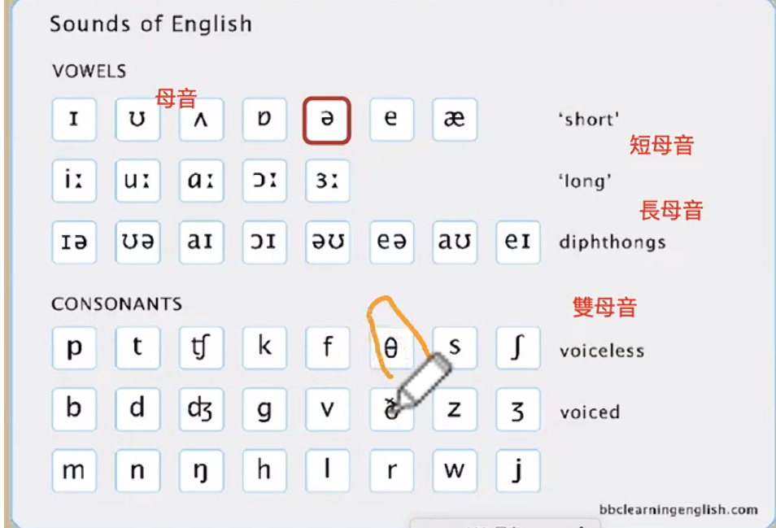
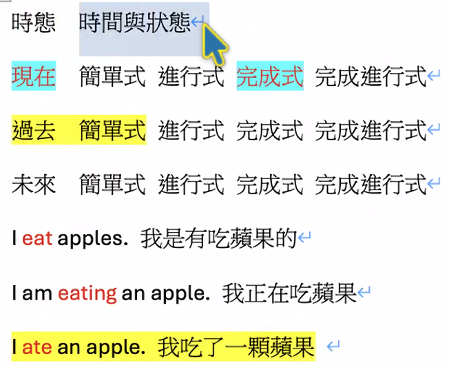
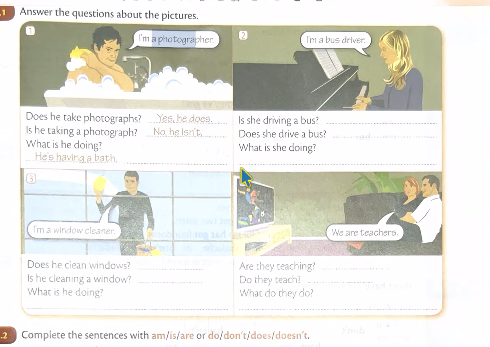
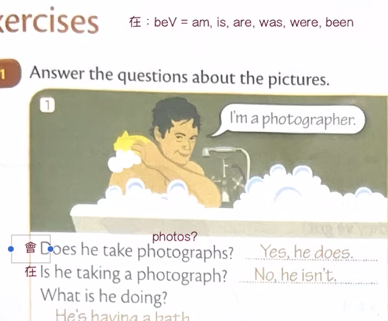
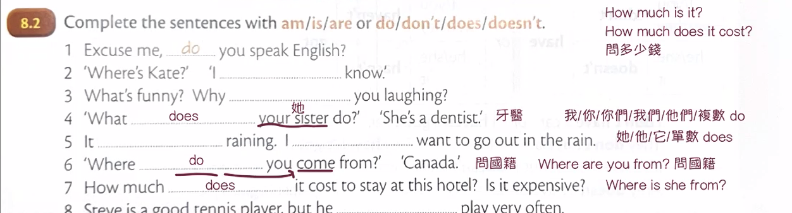
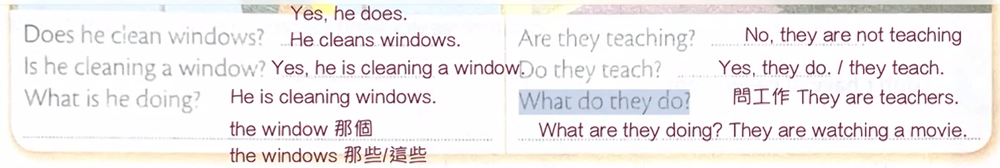
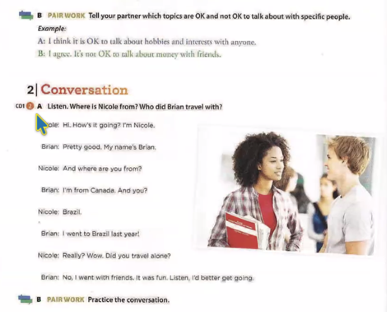
這張的字還沒抄，等下次整理
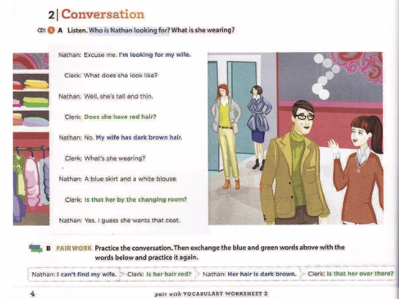
這張的字還沒抄，等下次整理
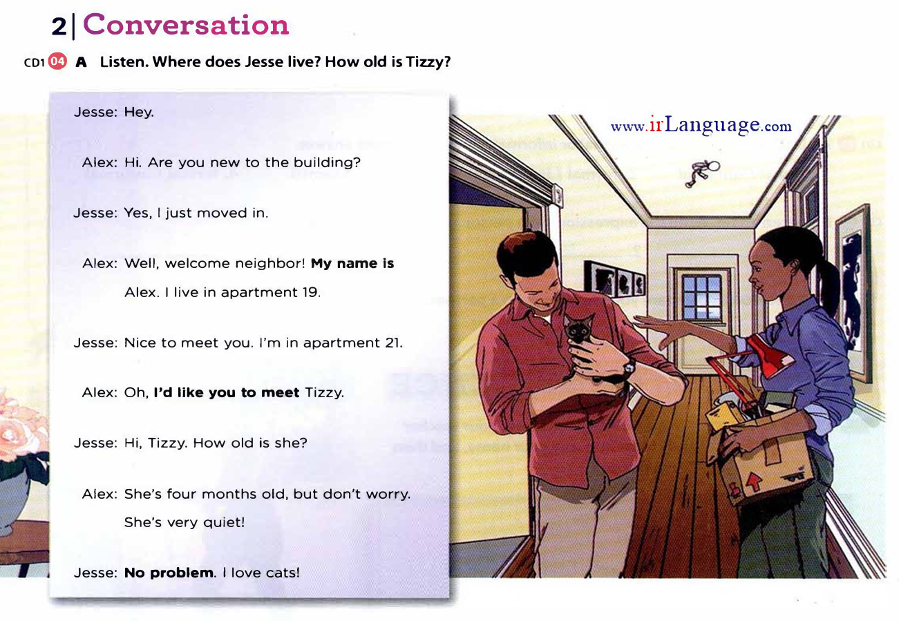
這張的字還沒抄，等下次整理
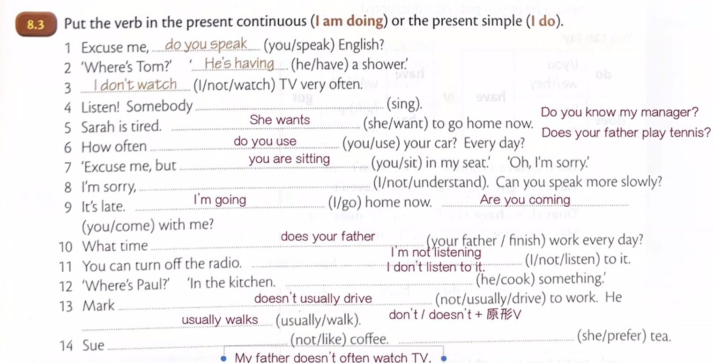
這張的字還沒抄，等下次整理
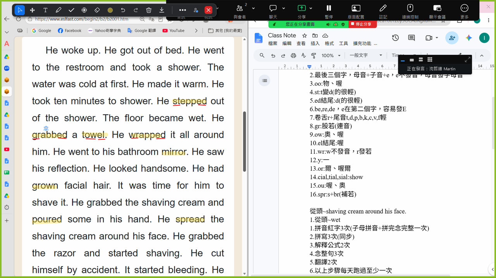
這張的字還沒抄，等下次整理
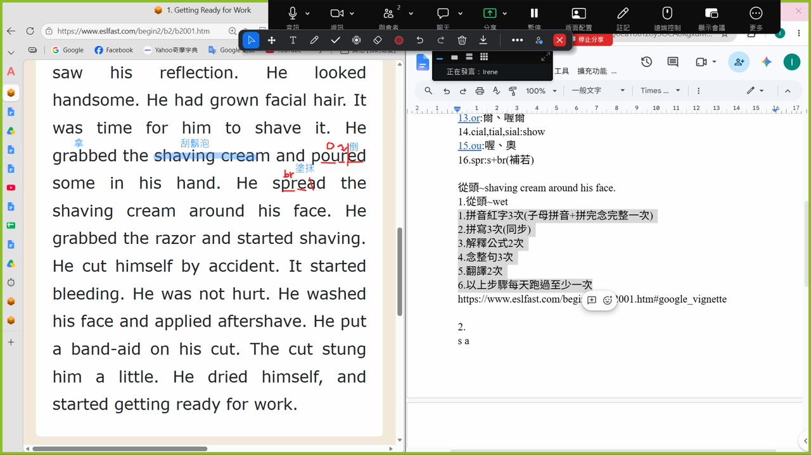
這張的字還沒抄，等下次整理
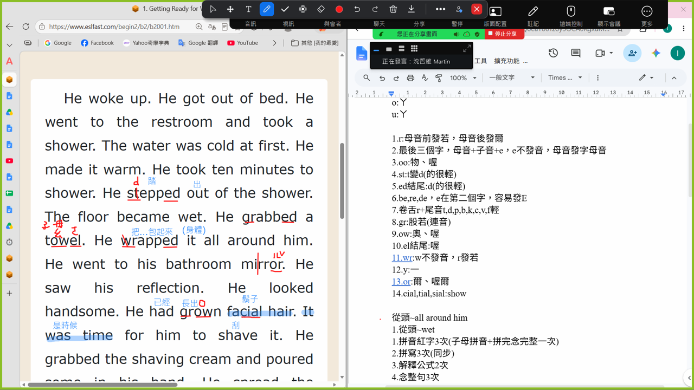
這張的字還沒抄，等下次整理

這張的字還沒抄，等下次整理
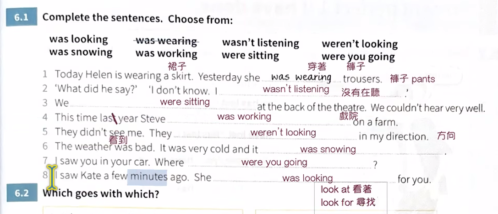
這張的字還沒抄，等下次整理
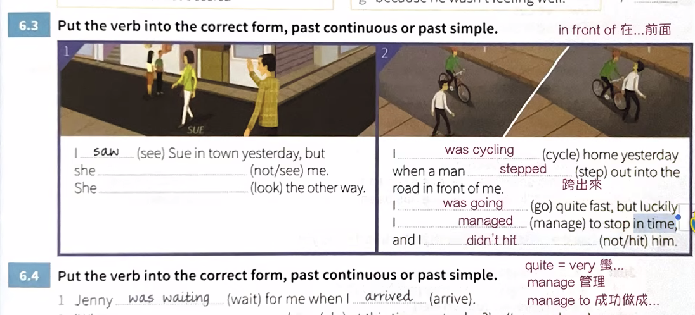
這張的字還沒抄，等下次整理
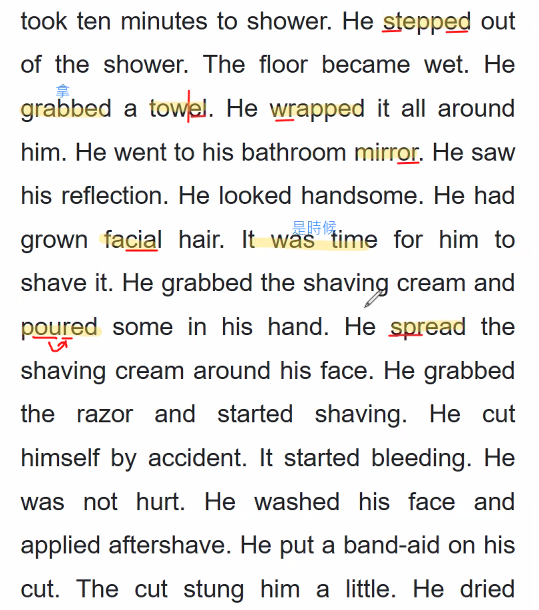
Daily Dictation（聽寫練習） 2026-09-23
老師推薦。挑「能聽懂一半」的來練，從 A1／A2 開始。聽比自己程度難一點點的才會進步。
2026-09-25
where is Nicole from，沒有live，Nicole是哪裡人
2026-09-25
音聽: who did Brian travel with.
2026-09-25
過去式
2026-09-25
（無文字，附件見下）
附件：image.png
2026-09-25
went 過去式
2026-09-25
fun 安的音
2026-09-25
ㄈㄢˋ不是ㄈㄤˋ
2026-09-25
Who is Nathan looking for? looking for就是尋找
2026-09-25
（無文字，附件見下）
附件：image.png
2026-09-25
<@&1547588329107750994> 第一段用does不是do為甚麼
2026-09-25
因為有look 這個動詞
2026-09-25
be動詞 就是動詞
2026-09-25
Look, like 一般動詞
2026-09-25
have是動詞
2026-09-25
ving正在
2026-09-25
（無文字，附件見下）
附件：image.png
2026-09-25
用does因為live是動詞+三單
2026-09-25
to 在裡面發特
2026-09-25
how ol di she
2026-09-25
four month sold
2026-09-25
very quiet (t 不發)
2026-09-25
否定+原型v
附件：image.png
2026-09-25
my father often watches TV
2026-09-25
MY mom often uses the car.
2026-09-25
do+非三單+動詞= 問句 does+三單+動詞= 問句
2026-09-25
否定 主角+don't /doesn't+動詞
2026-10-12
a:ㄟ(嘴巴張開發A) e:ㄟ i:一 o:ㄚ u:ㄚ 1.r:母音前發若，母音後發爾 2.最後三個字，母音+子音+e，e不發音，母音發字母音 3.oo:物、喔 4.st:t變d(的很輕) 5.ed結尾:d(的很輕) 6.be,re,de，e在第二個字，容易發E 7.卷舌r+尾音t,d,p,b,k,c,v,f輕 8.gr:股若(連音) 9.ow:奧、喔 10.el結尾:喔 11.wr:w不發音，r發若 12.y:一 13.or:爾、喔爾 14.cial,tial,sial:show 15.ou:喔、奧 16.spr:s+br(補若) 從頭~shaving cream around his face. 1.從頭~wet 1.拼音紅字3次(子母拼音+拼完念完整一次) 2.拼寫3次(同步) 3.解釋公式2次 4.念整句3次 5.翻譯2次 6.以上步驟每天跑過至少一次 https://www.eslfast.com/begin2/b2/b2001.htm#google_vignette 2. s a sa sad 念整句 Lesson 2~Lesson 6 https://drive.google.com/file/d/19fX__TI8Vy3rmETi42fPABL5oSkfrwft/view?usp=sharing
2026-10-12
（無文字，附件見下）
附件：Screenshot1-01_1280x960_1.png
2026-10-12
（無文字，附件見下）
附件：Screenshot2-01_1280x960_1.png, Screenshot1-01_1280x960.png, Screenshot2-01_1280x960.png
2026-10-14
(https://docs.google.com/document/d/1d3dZopnnOSEvfcVvlnp2vAJMLK8Oi9yguh3r5K5HUOo/edit?tab=t.0)
2026-10-14
看一下這個連結加進去課表
2026-10-16
（無文字，附件見下）
附件：image.png
2026-10-16
（無文字，附件見下）
附件：image.png
2026-10-16
/ˈfɔː.tʃən.ət.li/
2026-10-16
Approximately
2026-10-16
Unfortunately
2026-10-16
Absolutely
2026-11-08
shave 刮
2026-11-08
grabbed 拿
2026-11-08
poured ou → 第 15 條：ou：喔，r母音後發「爾」，
2026-11-08
spread spr → 第 16 條：spr：s＋pr（補若）
2026-11-08
facial
2026-11-08
poured [pord] 倒
2026-11-08
wrapped 把…包起來（身體
2026-11-08
今天這些複習的時候都不熟
2026-11-08
stepped towel 的el是要切開的 grabbed wrapped 念成wapped mirror 沒有念對 facial 沒有唸出來 poured 念錯 spread 念錯解釋不出來
2026-11-08
黃底
附件：image.png
2026-11-08
17.ng : g 不發音，n發鼻音